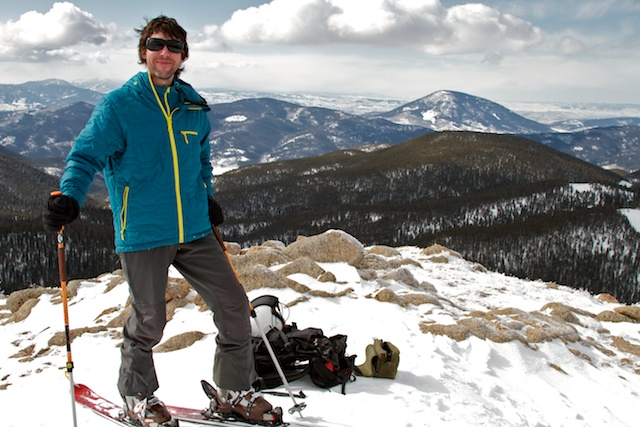

Hi, I'm Kristian.
I create websites, build iOS apps and make music. I seek truth, beauty and mystery. Find out more about me below or hire me for your next awesome endeavor.
Me
I am an iOS / web developer, graphic designer, musician, mountain biker, skier and all-around adventurer. I live in and explore Crested Butte, CO with my two Australian Shepherds, Harper and Juno.
Previously I worked as a molecular biologist, first on the Human Genome Project, then as a research & development scientist at Eppendorf 5-Prime. I finished my science career as a clinical research scientist at Denver Health, testing new methods to detect tuberculosis.
I make my own music under the moniker gunsolo - I play piano, guitar and some drums. I love old analog synthesizers, tube & nixie devices, legos, vector-based classic videogames, wild weather and space history. I'm an amateur photographer and film-maker; I always bring my camera along on adventures.
My Work
I've been a freelancer for about five years now and I love what I do; working on a wide variety of projects for a great group of clients. I don't accept a job unless I'm able to deliver above the clients needs and expectations. Please check out the projects on my home page, I feel that my work speaks for itself. Contact me for additional info on any past projects you are particularly interested in.
I'm not looking for a full time job, but you can hire me for interesting web / iOS / design / development projects. Challenging, creatively demanding projects preferred. (If you are a third-party recruiter, please don't contact me about employment opportunities. Thanks.)
Email me and say hi, or check out my miscellaneous ramblings:
Follow @kristiankeane